Staff/provider app · shares one backend with the CuraLink consumer app · 6 roles · React Native target
| Role | Share of usage (assumed) | Core loop |
|---|---|---|
| Nurse | ~45% | Go on duty → accept job → en route → arrive → run visit (vitals/notes/meds/labs) → complete → leave handoff note → paid |
| Doctor | ~10% | Teleconsult queue → video call → prescribe → post-consult notes |
| Vet | ~5% | Same as Nurse, pet-flavored job cards (species/breed fields) |
| Partner Admin | ~20% | Dashboard → live dispatch map → manage team (incl. pharmacy & ambulance partners) → billing/compliance/analytics |
| Pharmacy Partner | growing | Toggle accepting → review order (per-item stock check + substitution) → prepare → ready-for-pickup (rider code) → picked up → completed; track order history, reviews, low-stock alerts |
| Ambulance Partner | growing | Go on duty → accept emergency request → en route to pickup → arrived → transporting → hospital handoff → completed; trip history, crew & vehicle profile |
Role is selected once at onboarding (state.role) and drives credential copy, home dashboard layout, bottom-nav tabs, and role color throughout — see §6. Accounts can now hold more than one role — see §4.
Splash → Welcome/role picker → Login → Signup → Phone+OTP → Professional details (2 steps, role-aware credential labels) → Bank details → Verification pending → Approved → Availability setup → role Home.
Home (on-duty/off-duty/active-visit states) → Jobs list → Job detail (real Leaflet/OSM map) → Job accepted → En route (live map) → Arrived → Visit in progress (Vitals / Notes / Medications / Labs / Photos tabs) → Complete-visit checklist → Visit completed (rating + handoff note to care team) → Schedule → Set availability → Time-off → Earnings (+detail, withdraw, payout methods, payout history, tax docs, tips) → Profile (+documents, reviews, preferences, training) → Team chat → Add another role.
Home (teleconsult queue) → Incoming teleconsult → Video consult → Prescription writer → Prescription review/sign → Post-consult notes → Prescriptions history.
Home (accepting toggle, today stats, pickup-map teaser, incoming orders) → Orders (Active/History tabs) → Order detail (per-item in-stock/out-of-stock toggle + substitute-brand text field) → Fulfillment stepper (Preparing → Ready → Picked up → Completed, with rider pickup code) → Pickup map (real map) → Inventory (low-stock alerts) → Reviews/ratings received.
Home (on-duty toggle, today stats, live-map teaser, emergency requests) → Requests (Active/History tabs) → Request detail (patient, reason, pickup address, nearest hospital) → Transport flow (En route → Arrived → Transporting to hospital → Completed, real live map, publishes GPS) → Live map → Trip history → Vehicle & crew (driver, paramedic, equipment checklist) → Reviews/ratings received.
Dashboard (hero metrics + Pharmacy network / Ambulance fleet cards) → Live dispatch map (real map; plots nurse jobs = green, pharmacy pickups = blue, ambulance trips = red) → Team roster (includes pharmacy & ambulance partners) → Team member detail → Add team member → Reassign job → Billing → Payouts → Compliance → Analytics (jobs/revenue/response-time trends + Pharmacy fulfillment trend + Ambulance response-time trend) → Reports export → Pharmacy network screen → Ambulance fleet screen.
Notifications (+ detail, incl. pharmacy/ambulance events), Help center, Chat with ops support (real Claude call), Cura Assistant (real Claude, robust system prompt, quick-prompt chips), Settings (incl. dark mode, language), Emergency/SOS (with in-flow Request-ambulance shortcut), Partner-pharmacy locator, Design system reference (now includes pharmacy/ambulance colors & role badges).
All 8 map-bearing screens (Job detail, En route, Live dispatch, Partner-pharmacy locator, Ambulance SOS-request, Pharmacy pickup map, Ambulance transport, Ambulance live map) use Leaflet + OpenStreetMap tiles — genuine pan/zoom/pin rendering, no API key required. Hyderabad-area coordinates are used throughout for realism (Kondapur, Jubilee Hills, Banjara Hills, HITEC City). Swapping to Google Maps SDK in production is a drop-in replacement behind the same marker/route data shape — see leaflet-map.jsx.
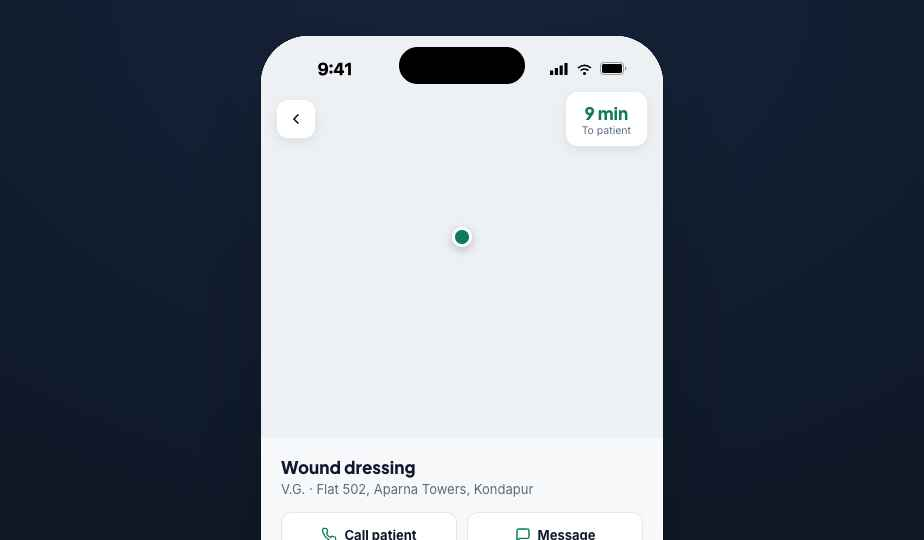
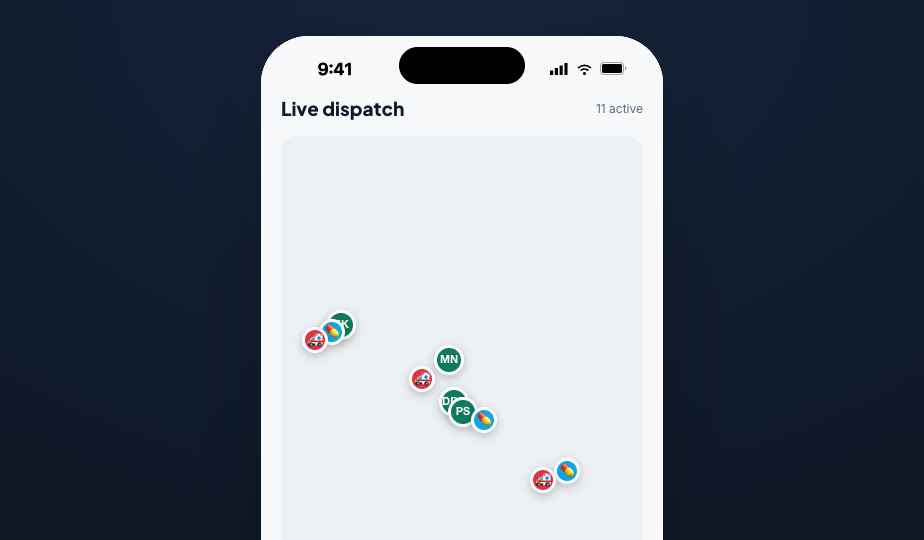
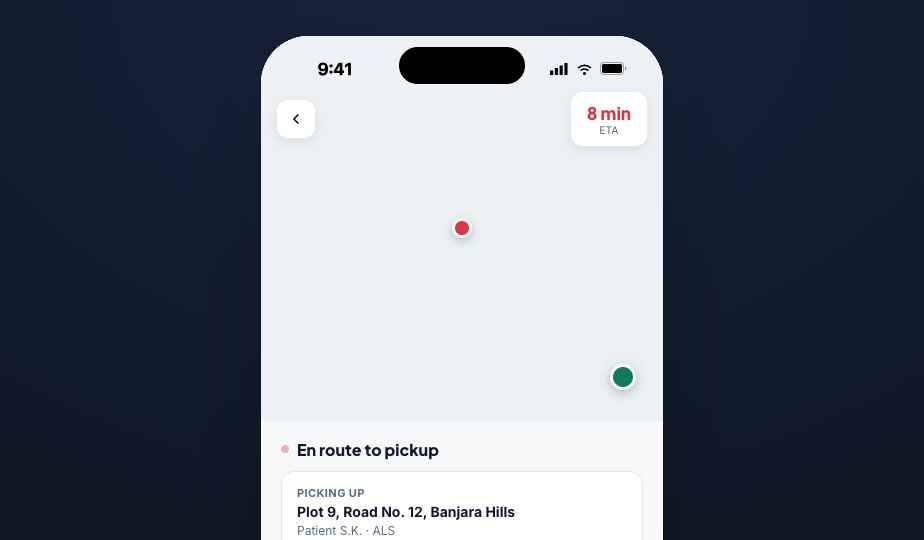
A single verified identity can now hold more than one role (e.g. a nurse who is also a Partner Admin) without re-onboarding. Profile → Your roles lists active roles with a + Add role flow that activates instantly (same bank details, same verified documents). A role pill next to the date on Home opens an in-place switcher that swaps the entire active dashboard to any held role — no logout/login round-trip.
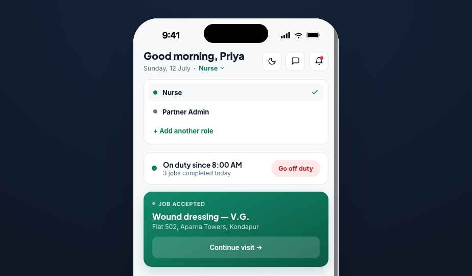
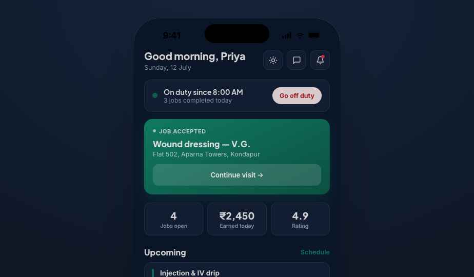
Team chat — group/team channels distinct from 1:1 ops support: per-patient Care Team (nurse + doctor + admin on today's active visit), shift-handoff broadcasts, and admin escalation threads. Reached from a header icon on Home and from Profile. The Visit Completed screen now includes an optional handoff-note field that posts directly into the Care Team channel — closing the loop between finishing a visit and briefing whoever covers next.
In-app payouts — linked payout methods (bank account / UPI) with a default + backup badge, method selection at Withdraw, and an itemized Payout history ledger (date, method, amount, status).
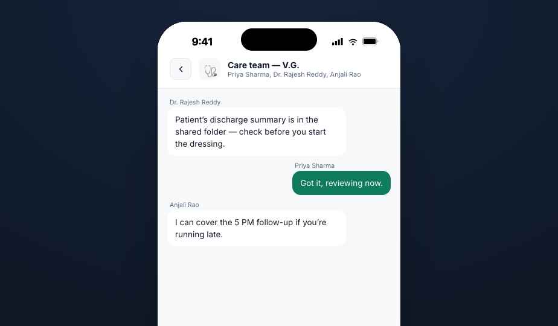
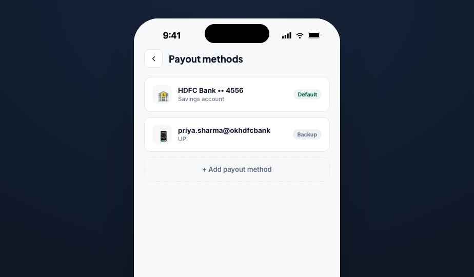
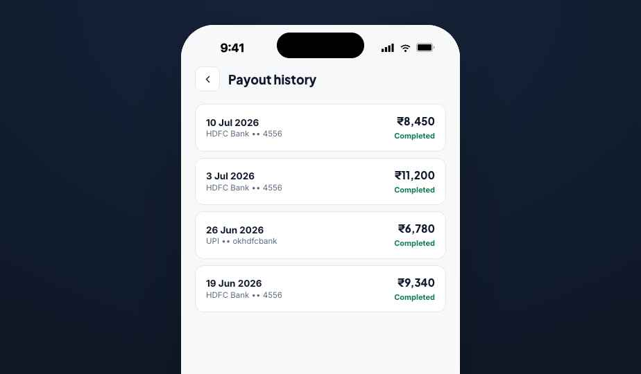
| Token | Value | Usage |
|---|---|---|
| Primary teal | #0F7A5E | CTAs, nurse/vet role color, active states |
| Amber accent | #F4A23B | Ratings/tips highlights |
| Doctor blue | #3B82F6 | Doctor role color |
| Vet purple | #8B5CF6 | Vet role color |
| Admin slate | #64748B | Admin role color |
| Pharmacy sky | #0EA5E9 | Pharmacy role color, order accents |
| Ambulance red | #DC3545 | Ambulance role color, urgent/emergency accents |
| Ink / Surface / Background | #10192B / #FFFFFF / #F7F8FA | Light mode text/card/page. Dark mode: #F5F3EF / #131E33 / #0A1628 |
Type: Plus Jakarta Sans (headings, 600–800) + Inter (body/numbers, 400–700). Radius: 10–16px. Shadows minimal — hairline borders do most of the elevation work. Full live reference at the in-app Design system screen (Settings → "Design system reference").
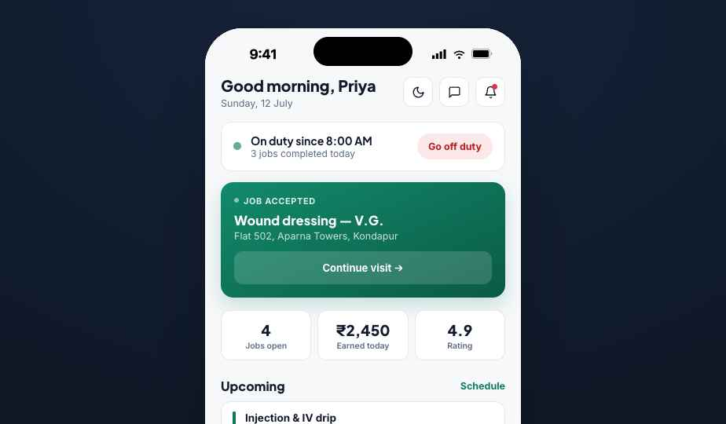
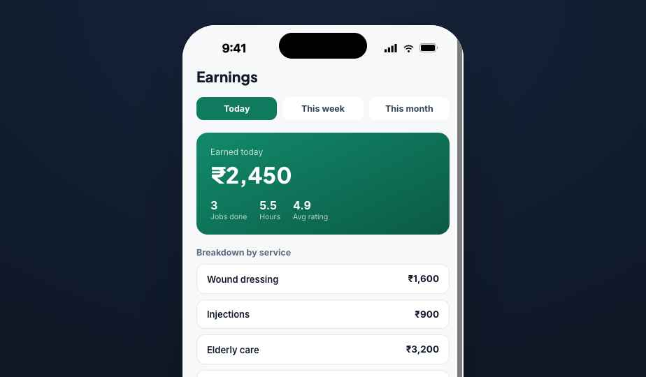
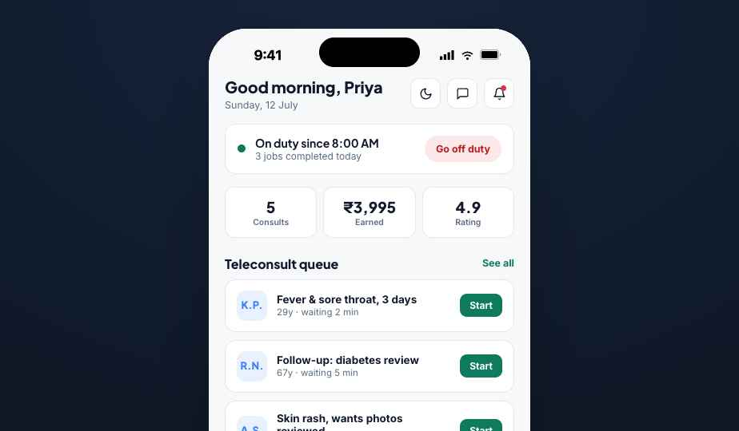
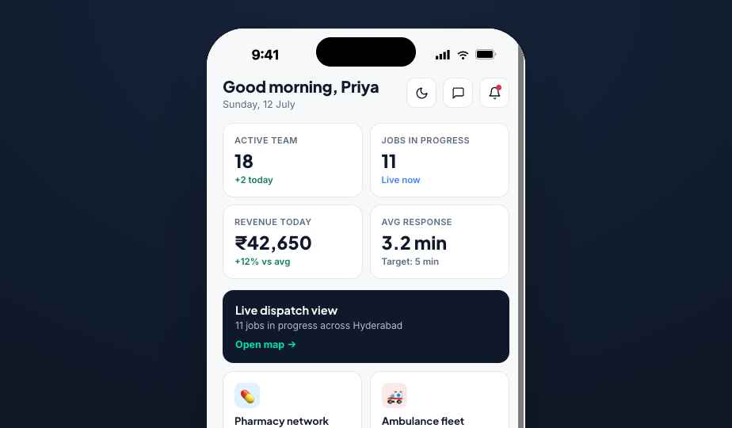
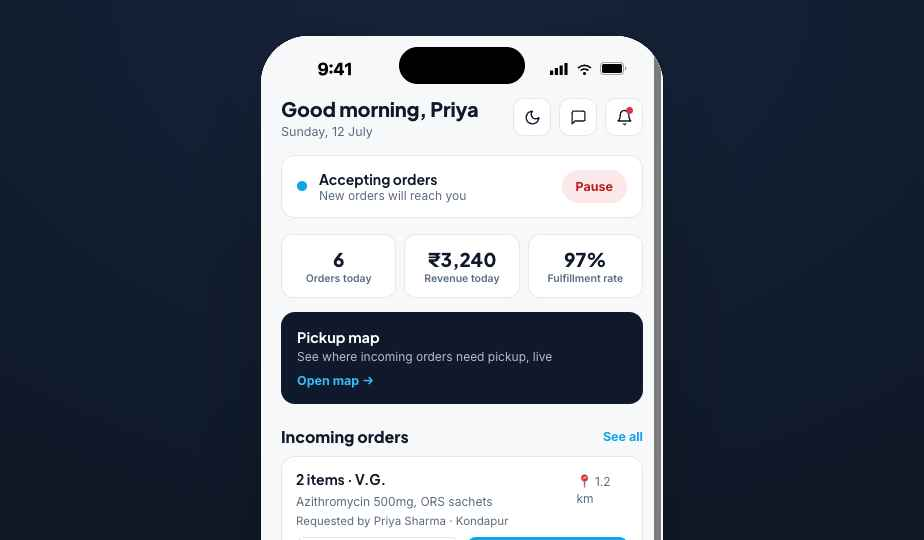
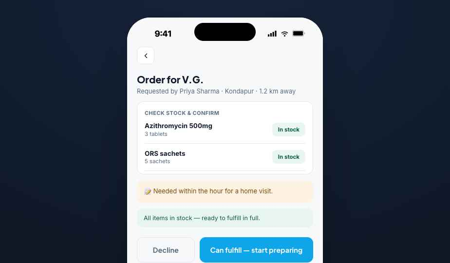
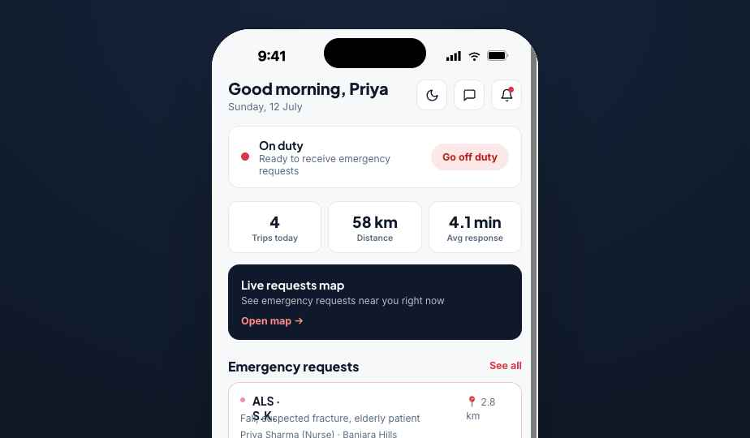
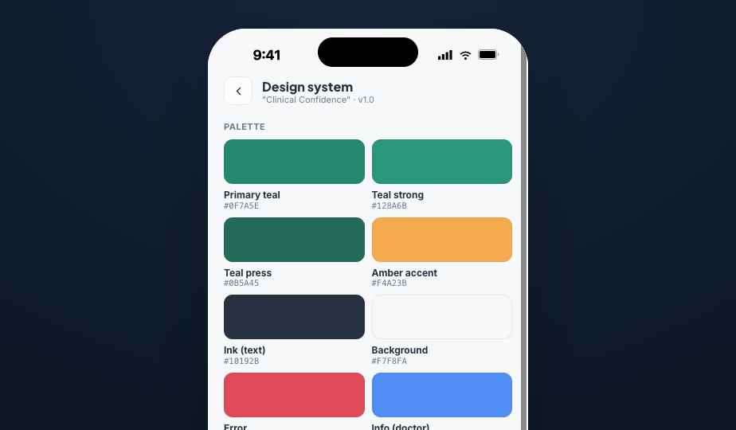
These are the entities both apps read/write. Field names below match the prototype's in-memory shape; map 1:1 onto your real schema.
| Entity | Key fields | Written by | Read by (CuraLink consumer) |
|---|---|---|---|
| User / Professional | id, role(s) (nurse/doctor/vet/admin/pharmacy/ambulance — now an array for multi-role accounts), credentials, docs[], bankDetails, payoutMethods[], availability, rating | Plus onboarding / Add-role flow | Displayed on booking confirmations, "your nurse" cards |
| Job / Visit | id, patientInit/patientFull, service, condition, allergies, status (new→accepted→en_route→arrived→in_progress→completed), vitals{}, notes, medsGiven[], labReports[], handoffNote, payout | Plus (accept/advance/vitals/notes/labs/handoff note) | Consumer live-tracking screen, visit report, health records |
| GPS ping | jobId or ambulanceReqId, lat/lng, ts | Plus (published continuously during En route / Transport) | Consumer "track your nurse/ambulance" map |
| Prescription | id, patientId, meds[{name,dose,duration}], advice, doctorSignature | Plus (Doctor → Prescription writer) | Consumer Health Records, pharmacy order source |
| PharmacyOrder | id, nurseId, patientInit, items[{name,qty,inStock,substitute}], status (pending→preparing→ready→picked_up→completed/declined), pickupCode | Plus nurse (creates via "Send prescription here") + Plus pharmacy (fulfills) | Consumer order/medicine tracking |
| AmbulanceRequest | id, requester, patientInit, type (BLS/ALS), reason, pickupAddr, hospital, status (pending→accepted→completed/declined) | Plus nurse/doctor (SOS→Request ambulance) or Consumer app directly | Consumer emergency-tracking screen |
| TeamRoster | id, name, role, status, rating, todayEarnings, docsOk | Plus admin actions (assign/reassign) | Admin-only (not consumer-facing) |
| ChatChannel / ChatMessage | id, type (care-team/handoff/escalation/ops-1:1), members[], messages[{who,text,ts}] | Plus (all roles post; nurse handoff notes auto-post) | Not consumer-facing (staff-only) except where a care-team message references a shared Visit |
| PayoutMethod / PayoutRecord | method: bank/UPI + isDefault; record: date, amount, method, status | Plus (professional links method; system generates payout records) | Admin-only (Payouts screen aggregates across team) |
Note the deliberate symmetry: a PharmacyOrder created from the nurse-side "Partner pharmacy locator → Send prescription here" flow is the exact record a Pharmacy Partner sees in their Orders queue. An AmbulanceRequest raised from SOS is the exact record an Ambulance Partner sees in their Requests queue. Build these as one table each, not per-app copies.
window.claude.complete in the prototype; in production, proxy through your backend so you can inject real patient/job context server-side and keep API keys off-device.nav) that was never a real route, so it silently evaluated false on every screen. Fixed by computing showBottomNav from an explicit list of tab-root screens. If you're porting this prototype's logic 1:1, double check any "is this a root/tab screen" condition against your actual route table rather than a magic string.